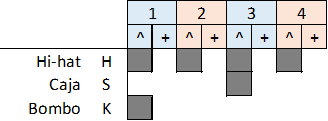

K
R1
DT
HT

Estrofa: (R1: 12) | Puente: (HT: 7)(DT: 1) | (x2) Estribillo: (DT: 4) | Estrofa: (R1: 12) Puente: (K: 8+8+8) Estribillo: (DT: 4) Solo: () Estribillo: (DT: 6) Estrofa: (R1: 12) Puente: (HT: 6)(DT: 2) (HT: 6)(DT: 3) Estribillo: (DT: 4)

Tengo que hablar con el flamante titular. Tiene que ver lo que no puede rechazar. Algo imprescindible, algo vital para triunfar. Tal vez no seas feliz, necesites algo más. Busca bien el matiz, piensa y di qué más da, qué más da. Lagarto, lagarto. (x2) Cuando te digan "sólo tú me entiendes", "tan sólo tú sabes lo que quieres", "si estoy contigo el tiempo se detiene". Piensa si eres feliz, si alguna vez supiste amar, mira bien el cariz, piensa y di qué más da. "qué más da, qué más da". Lagarto, lagarto. (x2) "El que tuvo retuvo", "qué presencia sin igual", "la cara es el espejo de tu alma angelical", "ay, mira, tú, somos tal para cual". Piensa si eres feliz, si alguna vez supiste amar, dime qué persigues, qué es lo que ves al madrugar. Cuál es tu día a día, tal vez pienses en cambiar, pero si no haces nada tal vez nada cambiará. La peor terapia es piensa y di "qué más da, qué más da, qué más da". Lagarto, lagarto. (x2) (Solos, Guitarra, Piano, Dulzaina) Lagarto, lagarto. (x3) "Compañeros, hasta aquí, hasta aquí hemos llegado", "no se puede tolerar esta injusticia universal", "para esto hemos venido y os vamos a salvar". Otro salvapatrias, otra estafa piramidal, otra revolución que seguro acaba igual Por eso piensa, siente, ama, sigue libre, vive libre, piensa libre y di Lagarto, lagarto. (x2)